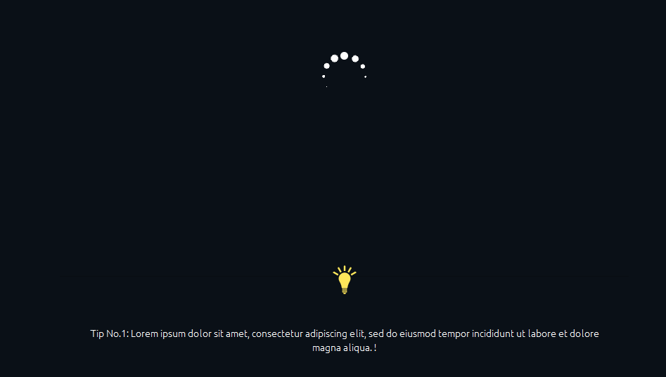
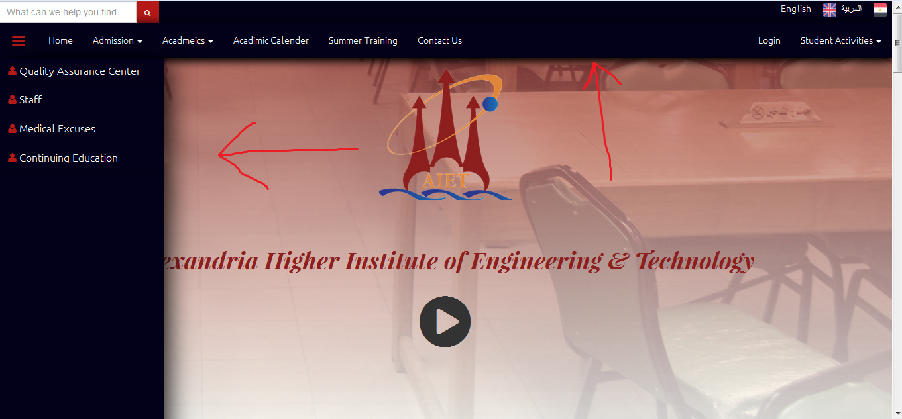
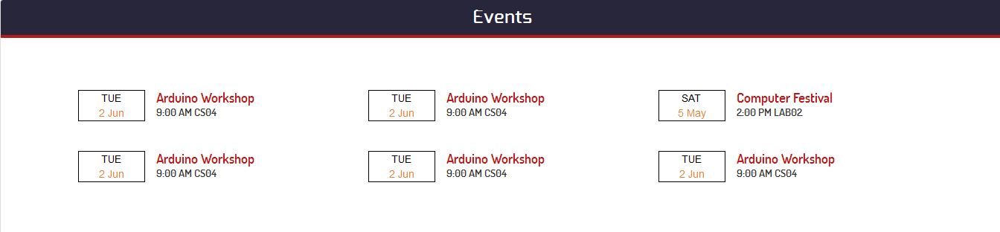
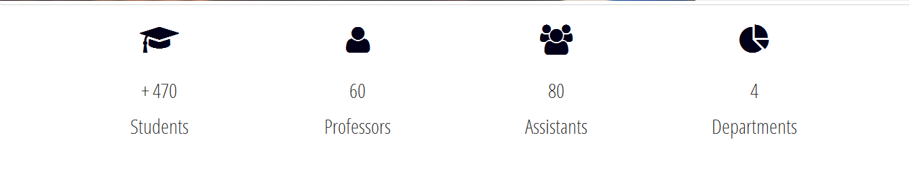
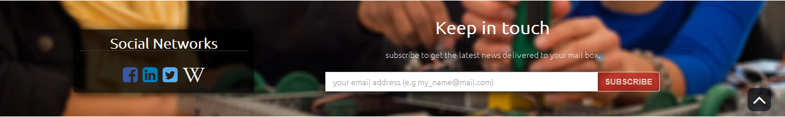
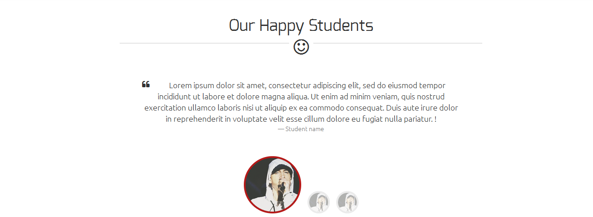
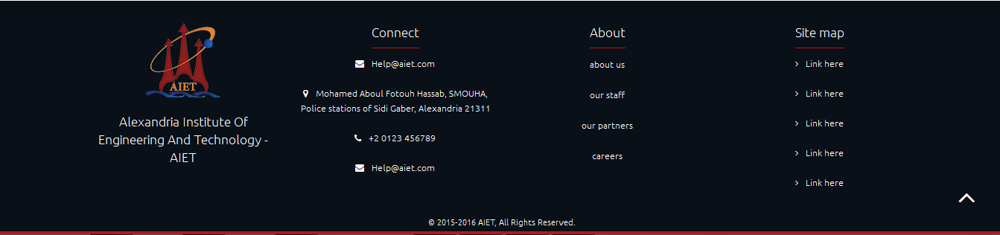

Waiting for the site to load data/resources is no longer a waste of time. We've made it useful by showing various tips/advices to the user whereas they're waiting for the site to load. Users with slow connection will really feel this.
The site is available in Arabic and English.
Sometimes you may want to find a particular thing quickly without wasting time looking for it everywhere. Here comes the use of our search bar.
That's not everything about the navigation bars, they come with a help system as well.

it's very cool for the students who wants to enroll in the college to take an online tour in the college and see how it's look like before they enroll
Note: we suggest hiring a professional photographer to record and montage high resolution video instead of this, We're not photographers but w did the best of what we can.
**we are offering three different qualities to cover all internet speeds and all users..
contains all the events that held inside the institute from the institute itself or from the different societies like Sootak etc...
that contains the latest news + facebook page feed
that contains the number of total students enrolled, professors, assistants and departments
that contains a pick from the best professors on the institute
that contains subscribe to news mail input field and social networks external links
that contains a sliding quotes written from a students saying some word about the institute
Contains the name, the logo, some contact information, some links about the institute and finally a site map
you can display them online no need to download some pages to surf it like before
with google map to reach the institute faster, some information and working hours